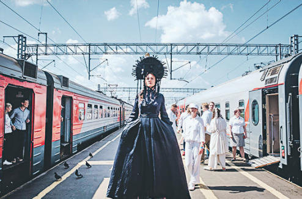
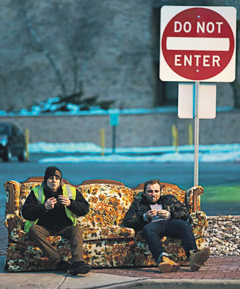
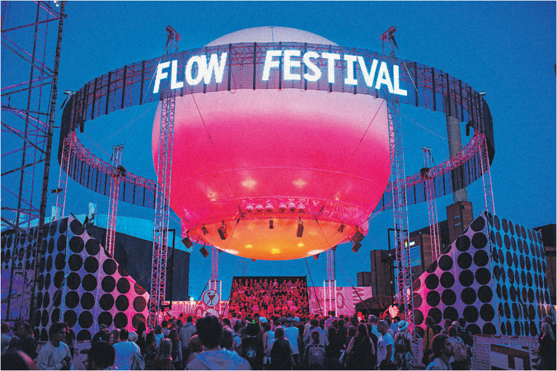
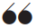
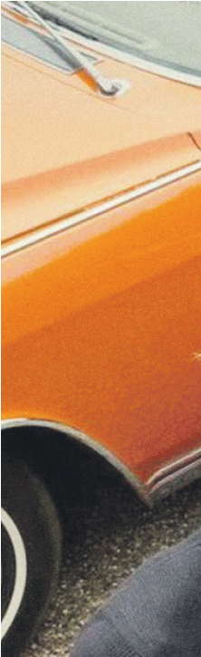

14
РБК • Ежедневная деловая газета
style.rbc.ru

МОСКВА, САНКТ-ПЕТЕРБУРГ,
СУЗДАЛЬ
3–11 августа
Фестиваль-путешествие, включающий театральные эксперименты в Москве и Петербурге, предлагает, кроме прочего, сесть в поезд и отправиться в Суздаль. Каждый вагон в этом «Составе мира» не похож на предыдущий.
Спектакли, инсталляции, поэтические баттлы—литературно-театральным поезд назван неслучайно. В Суздале желающих ждет другой необычный опыт—возможность сплавиться по реке Нерли, пообедать в поле, переночевать в гамаке. И все это в сопровождении искусства.

В прокате с 1 августа
Социальный работник по имени Вик живет в городе Милуоки, водит специальный микроавтобус для перевозки людей с ограниченными возможностями и старается помочь всем и сразу. Вик на самом деле Виктор, русский эмигрант, человек широкой души и наш проводник в мир странных, но обаятельных героев, которыми заполняется его автобус. Одновременно проникновенный и смешной фильм Кирилла Михановского основан на историях из его собственной жизни. Он, как и герой «Гив ми либерти», переехал в Америку и работал водителем медицинского автобуса.

Масштабный европейский музыкальный фестиваль, до которого несложно добраться из Москвы и совсем просто—из Петербурга, распределил свою программу по трем дням. Неизменное место действия—старая электростанция Сувилахти, сегодня превратившаяся в культурный центр, где в обычное время обитают работники архитектурных студий и модных агентств. Освоивший пространство фестиваль вырос до 11 сцен, на которые выйдут десятки музыкантов. Среди хедлайнеров, к примеру, — британцы The Cure, шведская певица Robyn, недавно отметившийся в Москве Джеймс Блэйк и заменившая Cardi B в последний момент Solange. Отдельная фестивальная глава—гастрономическое путешествие по всему свету, которое гарантирует фудкорт. Ему из года в год поют песни завсегдатаи Flow.
«Гив ми либерти» — третий фильм Кирилла Михановского. До выхода в отечественный прокат он успел отметиться в фестивальных программах «Санденса» и Канн
